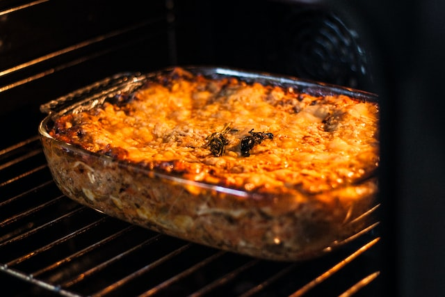

Lasagna alla bolognese

Description
Lasagna is a classic baked pasta dish typical of Italian Cuisine, particularly of Emilia Romagna specifically Bologna, which is why it is also called Lasagne alle Bolognese.
Based on a type of fresh egg pasta in the shape of rectangles called precisely "Lasagne"; which are first assembled in a baking pan and stuffed in layers with Ragù di carne, besciamella and parmesan cheese; and finally baked in the oven, where all the ingredients bind together giving life to an appetizing and succulent pasticcio!
Ingredients
- fresh pasta dough for lasagna layers
- 150gr of wheat flour '00'
- 50gr '0' flour
- 2 large whole eggs
- salt to taste.
- 250gr Parmesan cheese for the layers
- Ragù alla bolognese
- 600gr ground beef ( not too lean)
- 250gr ground pork ( not too lean)
- 700ml thick tomato puree + water
- 1 small white onion
- 70gr celery
- 70gr carrot
- 3 tbsp extra virgin olive oil
- 100ml of red wine (white is also good)
- 50ml whole milk
- salt
- pepper
- béchamel sauce
- 1\2l whole, skimmed or vegetable milk (or vegetable broth)
- 50gr butter (or 50 g extra-virgin oil)
- 50gr flour
- salt
- pepper
Steps
- How to make Ragù alla Bolognese:
- First wash and chop the onion, celery and carrot into small pieces.
- Then add them to a tall and large steel pot, add oil and sauté slowly for about 5 minutes, at this stage you can add finely chopped rosemary.
- Then add the ground beef and pork, crumbled with a wooden spoon.
- Let it brown for about 10 minutes over moderate heat, until all the juices of the meat are dried.
- Then add the wine and let it fade over a high flame.
- Be careful, the wine must completely evaporate, it is at this stage that all the flavors amalgamate and no trace of alcohol should remain that could give an unpleasant taste to the Ragù!
- As soon as the alcohol has completely evaporated, you can add the tomato puree.
- Then fill the empty passata bottle with water, shake and pour half of the 'water into the pot with the sauce.
- Bring to a boil and transfer the pot of your Ragu alla bolognese to one of the smaller burners you have!
- It should cook slowly for about 3 h with a lid on, turn occasionally and gradually pour in the remaining water.
- At the end of cooking add the milk as tradition commands, to dampen the taste of the tomato, but if you like you can also not add it! Adjust the salt and add a pinch of pepper.
- The end result must be a dry but at the same time creamy mixture!
- Here is your Ragù alla Bolognese ready.
- How to make homemade pasta:
- First help yourself to a fairly large, dry and clean wooden pastry board (marble alternative, plastic) and a scraper.
- Then arrange the flour in a heap, insert the eggs and salt in the center.
- Then with a fork, beat the eggs, as if making an omelet, gradually incorporating the flour, forming a cream.
- Incorporate more and more flour toward the center. As you do, the consistency of the eggs from liquid becomes creamy
- Finally proceed with a tarot or scraper (metal or rubber), lay the flour on top of the cream of eggs until the whole mixture is covered. Scrape precisely the bottom so that the egg custard does not stick to the wood and coarsely amalgamate.
- When the dough takes shape and no longer sticks, proceed to knead with your hands, vigorously, pulling and stretching the dough.
- Roll out the dough sheet by hand:
- Lightly flour the work surface with '00 flour.
- Then flour the wooden rolling pin as well.
- Finally roll out the pastry sheet vigorously, stretching the center and all sides, already trying to give the shape of a long rectangle. Whatever fresh pasta format you are going to make, the rectangle is always fine:
- Turn the pastry often, lifting it to prevent it from sticking to the surface. A pinch of flour each turn will be necessary, but be careful not to overdo it! The best pastry sheets are the soft ones, which have been made with as little flour as possible.
- Finally continue rolling out until you get a very thin sheet, (the thinner the sheet the better your dough will be!) the sheet should be almost transparent enough to glimpse the grain of your wooden pastry board; the ideal thickness for a fresh pasta sheet is 0.5 mm.
- How to make béchamel sauce:
- Mix butter or oil with flour on the stove.
- Slowly add milk and turning constantly until soft and smooth.
- Season with salt and seasoning.
- Finally cover with plastic wrap.
- Assemble your lasagna:
- Add a generous ladleful of ragù to a baking dish then one or more lasagna sheets to cover the base:
- Then add 2 ladles of meat sauce and a few scattered spoonfuls of béchamel sauce, finally add a sprinkling of Parmesan cheese
- Then add a anew lasagna sheet and continue following the order.
- Finally top with 2 ladles of meat sauce, a few scattered spoonfuls of béchamel sauce, and finally a sprinkling of Parmesan cheese.
- Finally, cover the baking dish with aluminum foil, this way the ingredients will blend to perfection without burning immediately.
- Then bake in a well-heated static oven at 180° in the middle part for about 30 minutes; once the time indicated has elapsed, remove the aluminum foil, transfer to the upper level and bake for another 15 minutes. The last 5 minutes operate the grill and raise to 200° to get the crust!
- Remove from the oven and let cool for at least 15 minutes